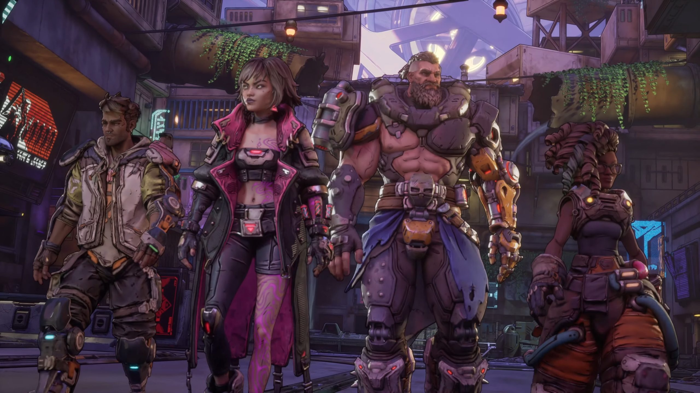
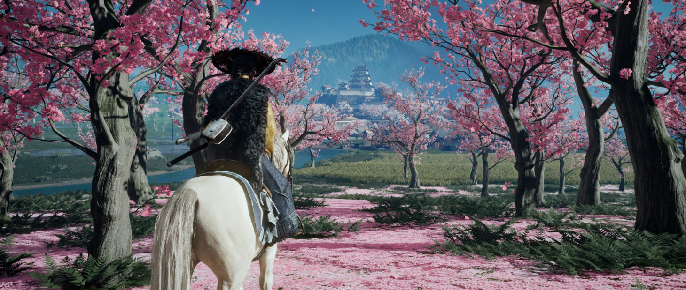
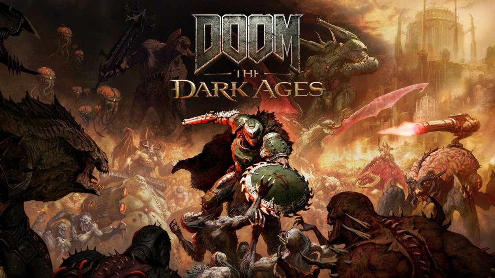
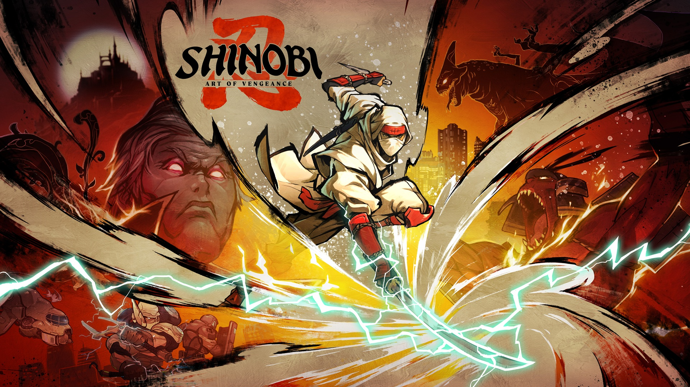
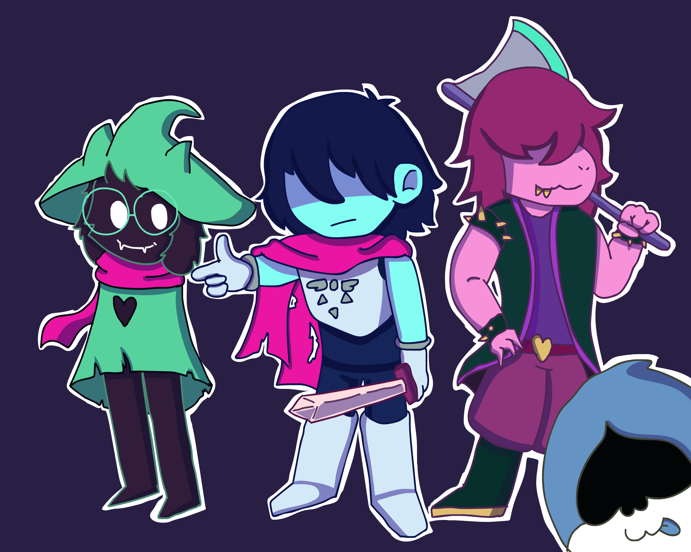
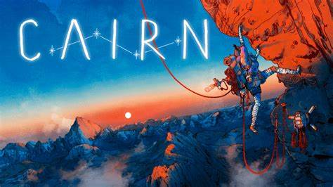
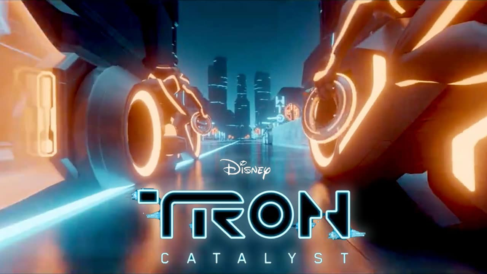
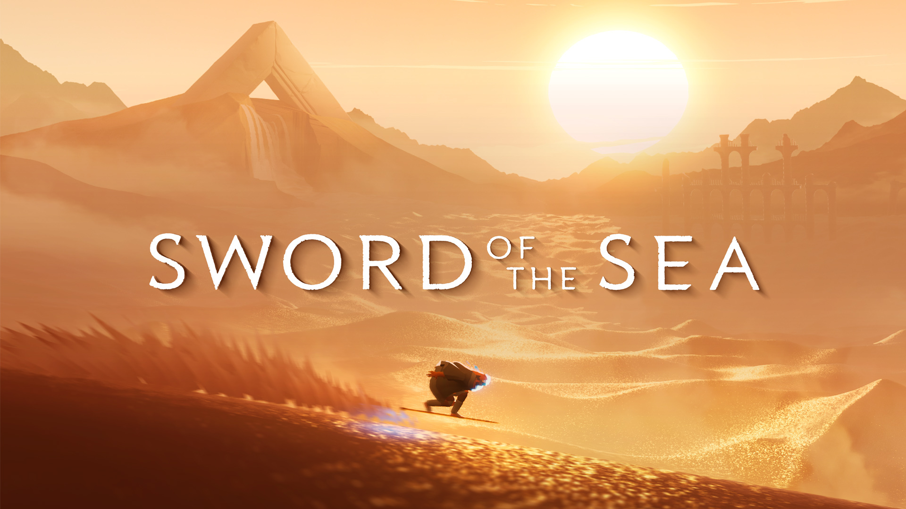

-

Borderlands 4 – Set to release September 23rd, 2025, Borderlands 4 has stirred a solid buzz throughout the gaming community. The first proper trailer for the game was released at the Game Awards last year, and it got crowds talking. The trailer features a large-scale conflict in a cinematic and then transitions to gameplay. The game is set to take place on a brand-new planet, Kairos, which is supposed to be open-world with seamless loading screens. The colors are bright, the graphics are smooth, and the gameplay looks simply fantastic. -

Ghost of Yotei – Given the success of Ghost of Tsushima from 2020, it is no surprise we are getting a follow-up with Ghost of Yōtei. However, the game itself isn’t a direct sequel, with a lot of key features changing. We have a new protagonist, Atsu, who is a young female warrior seeking revenge. The game also takes place 300 years after the events of its predecessor in a brand new location – Hokkaido. Sucker Punch dropped the release trailer in September, showing off the game’s beautiful visuals and hints of its intriguing storyline. We also saw Atsu can duel-wield katanas, making for an exciting new mechanic we did not get the chance to play with in Ghost of Tsushima. -

DOOM: The Dark Ages – As one of the most iconic and influential video game series of all time, any new entry into DOOM is bound to be talked about. Confirmed for a May 15 release, it was announced during the Xbox showcase in 2024, and is to be released for Xbox Series X|S, PS5 and PC. The game is set to take place after the events of Doom 64, but before the events of Doom (2016). -

Shinobi: The Art of Vengance – The last time this franchise got a release was in 2011, with a 3DS title that received mixed reviews. Shinobi: The Art of Vengeance was announced during the 2023 Game Awards, and is slated for a August 29 release this year. This title was particularly eye-catching because of its beautiful hand-drawn art style, which gives the game a natural and stunning flow. The game also returns the players to the shoes of Joe Musashi, who appeared in the first five titles and was the main character up until 1991. -
GTA 6 – How on earth can we have a most anticipated games article and not include this beast? Grand Theft Auto 6 was confirmed by Rockstar in February of 2022, and after leaks, promos, and delays, Take Two confirmed the game’s release for later this year. The game returns the player to Vice City, which we last saw in GTA: Vice City, and is a fictional representation of Miami. The title won The Most Anticipated Game award at the Game Awards in 2024, which was little to no shock for anyone vaguely involved in the gaming community.
-

Deltarune Chapters 3&4 – As a follow-up to Toby Fox’s acclaimed Undertale, Deltarune is continuing to expand with the upcoming releases of chapters 3 and 4. Fox has confirmed on a X/Twitter post that the two chapters are due for release this year, but exact dates depend on localization and console porting process. The game is slated to have 5 chapters, with development focusing on the completion of the narrative arc shortly after these two new chapters. -

Cairn – Cairn is an upcoming survival-climber game developed by The Game Baker, the makers of Haven and Furi. The player controls Aava, a climber who is aiming to reach the top of Mount Kami. The mountain is famous for having half of its challengers return, with no human reaching the summit. Aava is accompanied by a robot companion who supplies her with climbing equipment and allows her to build and retrieve anchors during the climb. -
 Date Everything! – Have you ever thought what it would be to date… well, anything but human? Well, Date Everything! is your chance to fulfill that dream! Players assume the role of a character who loses their job to AI and receives a pair of magical glasses dubbed “Dateviators”. These glasses animate every household object in sight, transforming them into dateable characters. With over 100 fully-voiced characters, this incredibly unique experience is bound to provide a brand-new experience to players.
Date Everything! – Have you ever thought what it would be to date… well, anything but human? Well, Date Everything! is your chance to fulfill that dream! Players assume the role of a character who loses their job to AI and receives a pair of magical glasses dubbed “Dateviators”. These glasses animate every household object in sight, transforming them into dateable characters. With over 100 fully-voiced characters, this incredibly unique experience is bound to provide a brand-new experience to players. -

Tron: Catalyst – TRON: Catalyst is an upcoming title from Bithell Games, set to release June 17th on PC and consoles. Players will get the chance to explore Arq Grid, which was introduced as a digital city in TRON: Identity (2023). It’s setting is characterized by unique environments, offering a rich backdrop for the game. We will play as Exo, who wields a power known as the Glitch after a mysterious package explosion. The Arq Grid is experiencing instability, and it’s the player’s job to explore Exo’s new power to explore the secrets of the Grid and save it from the brink of collapse. -

Sword of the Sea – Sword of the Sea caught a lot of people’s attention due to its similarities to Journey (2012) with its striking visual style. The game is built off the core mechanic where you surf across sand with your sword in a surfboard-like movement. You travel through Necropolis, uncovering an ocean lost with time, with the goal of restoring life to the land, encountering marine wildlife on the way.
Each of these games has generated major buzz in the gaming community, with fans eagerly awaiting announcements, trailers, and release dates throughout the year.